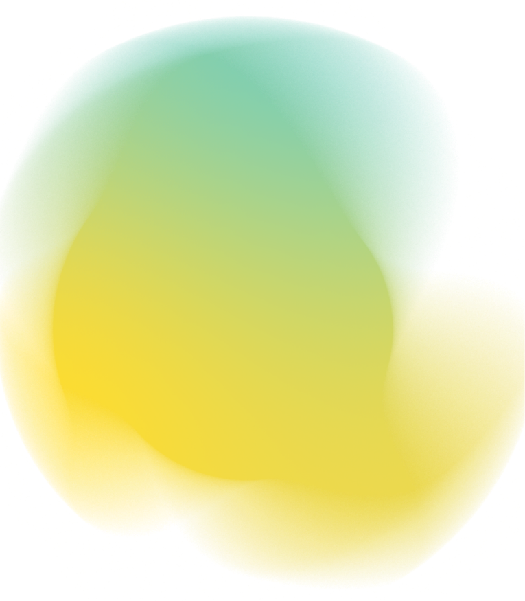
Founders Factory · Week 5
Tech Development
Agile & sprints
Building better and faster
Recursive, self-improving teams
Person <> person loops
Product
Engineering
This used to be a masterclass on tightening loops between people
Product intent → engineering output → get feedback → refine.
Product intent → engineering output → get feedback → refine.
That gap used to be closed by people.
It should be closed by self-improving agents.
It should be closed by self-improving agents.
In practice
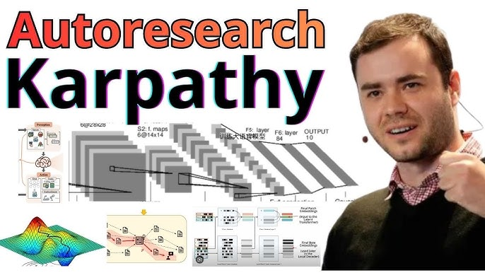
Agentic model training
- Curate & label fresh training data
- Run a fine-tune - the agent owns the inner loop
- Watch the loss curve & eval metrics
- Ship the model if it beats the last one
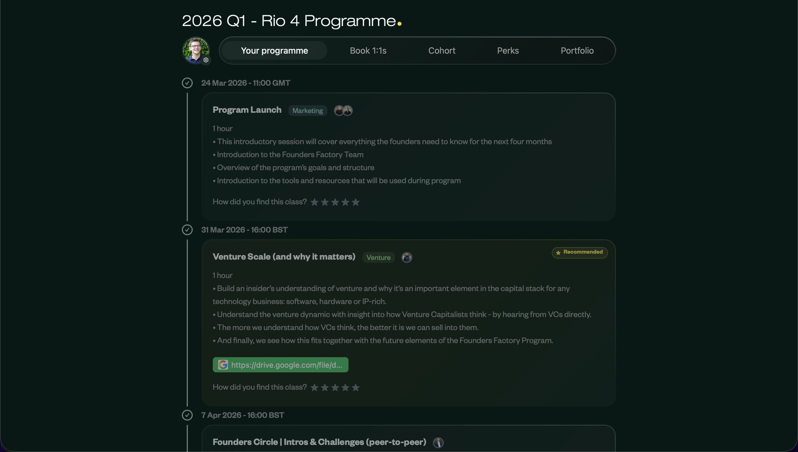
Self-improving products
- Ingest customer feedback, prioritisation & user analytics
- Make the change & push the code
- A/B test it in production
- Keep the winner, feed the result back
The Paradigm Shift
Recursion in agents
The shift: from instructing the model step by step →
setting it up to find the delta between its output and yours, and close it itself.
setting it up to find the delta between its output and yours, and close it itself.
What we don't want
No cycle, nothing learned
AI drafts
→
You tweak & fix
→
Ship & forget
Corrections discarded — the loop never closes
No capture, no convergence - you pay for the same corrections over and over
The Paradigm Shift
The recursive loop
01 · AI
AI drafts
proposes a first pass
02 · Human
You tweak
override or correct it
03 · AI
AI finds the delta
why did you change it?
04 · AI
Self-improving tweak
bakes the lesson back in
Close the delta
every cycle, the gap shrinks
No one writes the rules - the loop discovers them from what humans actually do
How do you get there? Two steps
Step 01
Radical context gathering
Record everything - conversations, decisions, docs, tool output
Open up access so the model can see what you actually did, not just the outcome
Context is the raw material the loop learns from
Easy to do with Notion, Granola, we have teams using computer use
Step 02
Recursive loops, everywhere
Set up self-running loops on top of that context
E.g. a weekly Claude cowork job that reads back through your conversations
It finds the deltas itself and proposes the improvements
Then get your whole team working this way by default
Working cohesively
Product
Our most important - and most complex - work still gets built by a team, together. That's exactly why proper product methodology matters more than ever across your company.
Agile methodology
Iterative process → continuous feedback
Agile relies on this approach - breaking work into defined sprints with clear goals, reviews, and retrospectives at each stage.
Sprint
A short, time-boxed period when a team works to complete a set amount of work.
Mostly to motivate teams, some move towards tighter, more continuous loops over time.
A 2-week sprint in practice
Week 1
Mon
Tue
Wed
Thu
Fri
Week 2
Mon
Tue
Wed
Thu
Fri
Ceremonies keep the team aligned and improving - each retro is a delta you feed back into the loop
Sprint Ceremonies
Planning
The most important part of the sprint. If you get this wrong, everything that follows suffers.
Planning - what happens?
01 · Document
Collect your ideas
Centralise everything in one place
Ensure each idea solves a real customer problem
Quantify the magnitude of the problem
Start thinking about how you'll measure success
02 · Prioritise
What delivers most value
How big is the opportunity?
Has it been validated?
How will you measure contribution to wider business goals?
Frameworks next slide!
03 · Refine
Write the PRD
Get AI to write it
Get AI to write it
Spar with the model - ask it to challenge you
What doesn't change is more important than ever
Your edits are the delta - log them so AI needs fewer next time
Cut the fluff. Make it easy for your team to execute
Prioritisation frameworks
ICE Score
Impact
7
×
Confidence
8
×
Ease
6
=
Score
0
Quick to calculate - only 3 factors
Structured vs. pure intuition
Scores are subjective - can embed bias
Ignores how many users are affected
MoSCoW
Must
Non-negotiable
Should
High value
Could
Nice to have
Won't
Out of scope
Great for non-technical stakeholders
Communicates release criteria clearly
Teams overestimate Must-Haves
More release planning than prioritisation
Risk / Reward
Optimises reward-to-risk ratio
Reduces impulsive decision-making
Estimating risk accurately is hard
Can favour short-term over long-term
No single method is perfect - the goal is to avoid the biggest mistakes
How to use these frameworks
01
Start with the simplest tool
ICE is fast to apply. You can always refine as the team grows - don't over-engineer the process before you need to.
02
Prioritisation evolves with the company
Early stage → prioritise learning. Later → switch to more structured methods like RICE or OKR-tied scoring.
03
AI is pretty good at ICE and RICE
Once it has good context at least. Every score you adjust is a delta it learns from for next time.
Sprint Ceremonies
After planning
Standup
Done Yesterday
Each member quickly shares what they’ve done
Today
Quickly share what you’ll do today
Blocked
Share what’s blocking you and unblock each other
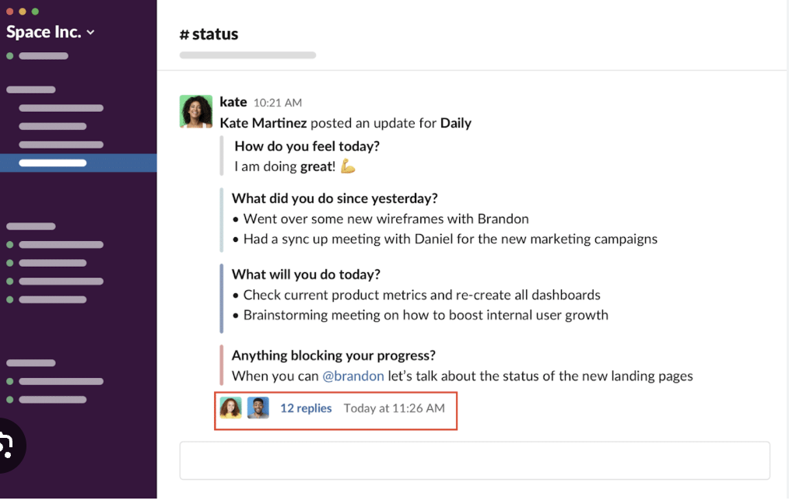
15 min · every day
Retrospective
Start
Share what you want to do differently
Stop
Share what we should stop doing
Continue
Share what worked well
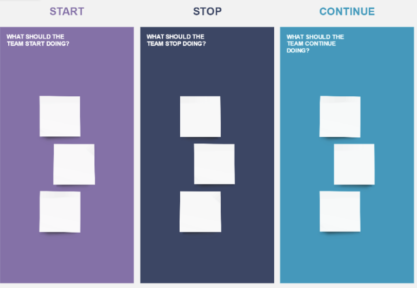
1 hr · end of sprint
Show & Tell
Show
Show a demo of what you’ve done
Tell
Talk about the impact it had
Answer
Answer any questions
1 hr · end of sprint
Sprint pitfalls & tips
Missing product requirements
→
Write clear, detailed PRDs
No success metrics defined
→
Know what you're measuring first
Ignoring unexpected events
→
Welcome urgent work when appropriate
Overcommitting each sprint
→
Account for tech debt & contingency
Not documenting sprints
→
Track learnings for recursion
Usual rejection
"I'm in deeptech - our data doesn't connect to Claude"
Specialist files, instruments, simulations
→
Have Claude make an MCP for you
No off-the-shelf integration exists
→
MCP is the integration layer: list, read, query, run
Your schema is weird, private, or evolving
→
Give Claude the docs and examples; it scaffolds the adapter
Don't wait for a vendor connector - make your own narrow, auditable bridge into the tools Claude needs.
Product → Build
Hacky
Building
Building
Hacky Building
Why are we here?
We build things to validate our
biggest assumptions
biggest assumptions
Hacky Building
We want to set up to:
01
Build value quickly
02
Adapt if we have to
Approach A
Busy building
then launch
then launch
Long build phases deliver value all at once - high risk if assumptions are wrong.
Approach B
Incremental
value delivery
value delivery
Releases at each milestone - faster feedback, more points to learn and adapt.
How do we break down
technical products?
technical products?
Complex secret
sauce - what’s
being invested in?
sauce - what’s
being invested in?
Strings files,
LLM prompts,
superparams
LLM prompts,
superparams
Vendor x
Package y
GenAI-built
component z
component z
No-code
dashboards,
Node-RED
controllers
dashboards,
Node-RED
controllers
Maximise
time here
time here
Enabling
non-technical staff
to work on these
non-technical staff
to work on these
The goal is to invest in the proprietary layer. Everything else can be bought, generated, or delegated
Complex secret sauce
What is secret sauce?
The specific hard-to-copy asset that makes investors believe the company can compound faster than competitors.
Peptone
AI design model for non-alphafold proteins
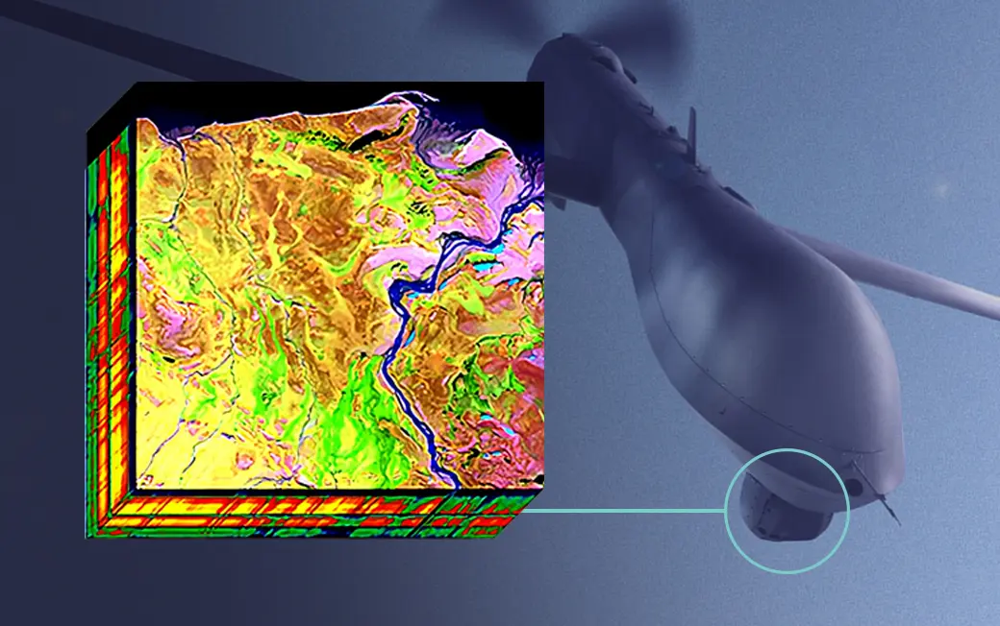
Prospectral
Optimisation layer turning conventional cameras hyperspectral
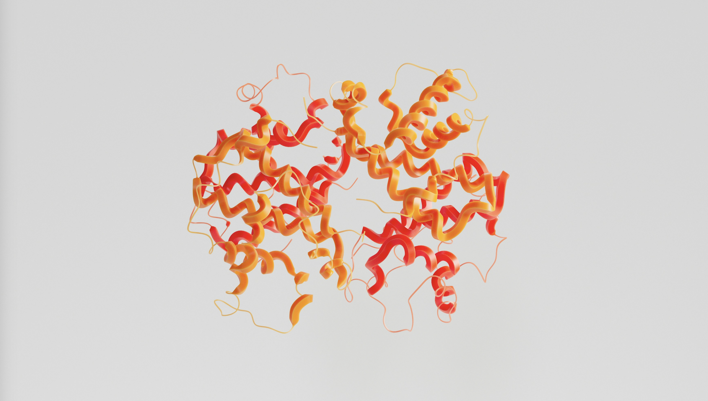
Enzidia
Enzyme engineering ML for manufacturing
VCs love the cycle: proprietary process → scarce data → better product → more data.
Outside of secret sauce, we can shortcut...
Vibe
coding
coding
 No/low-code
No/low-codeautomation
Expose AI
agents in n8n
agents in n8n
GenAI UI
design
design
 PoC db &
PoC db &deployments
Concierge
prototypes
prototypes
LLM prompts,
superparams
on edge
superparams
on edge
No-code DB
automation
automation
Embedded
regulated
features
regulated
features
Digital twin
vendors
vendors
Regulatory
templates for
devices
templates for
devices
GenAI PCB
design & test
design & test
No-code
embedded GUI
embedded GUI
GenAIpart design
Pre-packaged
IoT
IoT
Software startups → Hardware startups
Putting it together
Protect your sauce, shortcut the rest
Spend your time only on what's proprietary.
Buy or generate everything else.
Prove one slice and raise to fund the next.
Buy or generate everything else.
Prove one slice and raise to fund the next.
For Example
Big sauce - getting to a £30M floatilla
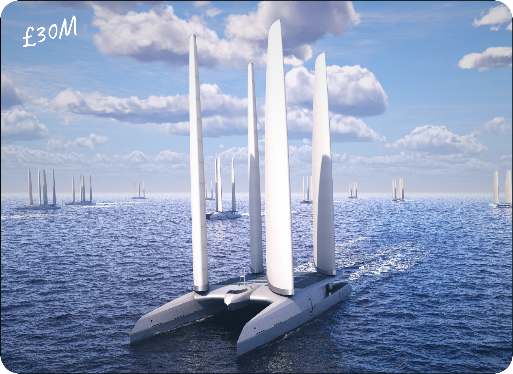
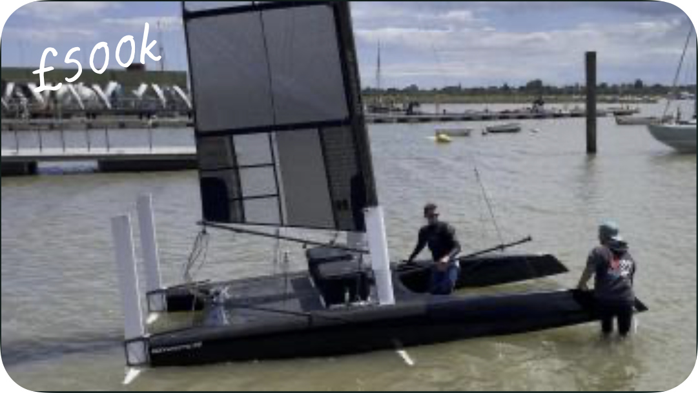
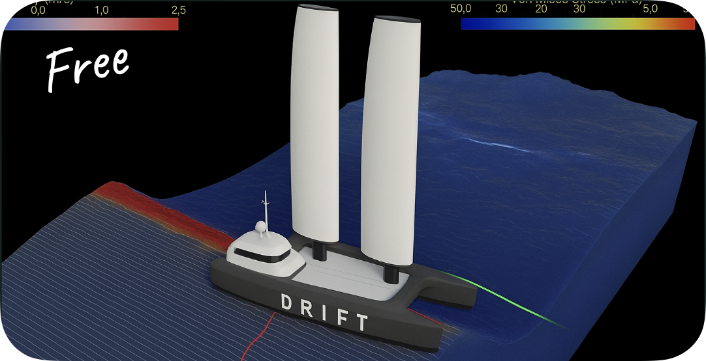
Done a sprint.
Made something.
How do I get it to self-improve?
Made something.
How do I get it to self-improve?
Data
Flywheels
Flywheels
What is a data flywheel?
01 · Goal
Set a business goal
02 · Understand
Use data to explain it
Find drivers, constraints, and signals
03 · Feed back
Put insight into build
04 · Measure
Measure the improvement
(If any))
Moat compounds
each loop makes you harder to copy
Prerequisite
Being aware of your data & target state
aws
MATLAB
snowflake
CLOUDFLARE
GitHub
circleci
Frazzled
Doesn’t matter anymore... because AI
aws
django
AmazonSageMaker
53
Not frazzled
Also not necessarily useful
Data Management
Setting goals - sending drones into a mineshaft
Can my hyperspectral camera drone identify ore-grade zones
with >90% accuracy vs lab results over the next three months?
Multiple data
layers
layers
Data
format
format
Condition complexity
Ambitious!
Time marker
Start small - grow your flywheel organically
Data Flywheel · 02
Use data to understand the goal
AI case
Ask Claude with maximal context
Load it with the business goal, target state, data sources, customer evidence, docs, and constraints. Let it find the signals, gaps, and likely explanations for you.
Human case
Use humans for strategic or physical lab cases
The job is mostly the reverse: filter for the optimal context, derive datasets into trends, and stop people getting overloaded by raw evidence.
Target state tells you what context matters. The value is not more data, it is knowing what to include, what to ignore, and what pattern you are trying to explain.
Data Flywheel · 03
Feed what you learn
back into the system
back into the system
Build based on what you’ve learnt
Capture corrections so you and/or AI knows what’s working later
Data Flywheel · 04
Measure whether the goal actually moved
Baseline
Know where you started
Compare against the current state, not vibes or one-off anecdotes.
Impact
Track the business outcome
Tie model or workflow quality back to revenue, cost, risk, speed, or accuracy.
Next loop
Decide what to improve next
Measurement creates the next goal, not a static report.
Main bit done!
FAQs from teams
The tips and questions I couldn't fit into this...
How do I make the right decisions?
How quickly
can we build?
can we build?
How easily does
this scale?
this scale?
Will this be hard
to maintain?
to maintain?
Is my CTO familiar
with x technology?
with x technology?
Do I need more
redundancy here?
redundancy here?
How much does
this cost per user?
this cost per user?
Does it do everything
I want it to do?
I want it to do?
Different priorities over time
Making the right tech decision
Getting Tactical
Team pitfalls
Small & senior
Larger, junior teams are harder to pivot and take time to manage
Retros
Iron out your differences early on, and continue to adapt
Decoupling
Breaking down teams or technologies too early
CEO-led feedback
As the CTO, am I stifling innovation by saying no?
Getting Tactical
Regulation
Anticipate
Investigate regulation in your space early to avoid roadmap changes down the line
Other founders
Friendly compliance teams
Academics
Industry advisory committees
Focus
Industries typically have focal areas of regulation:
Mining: health & safety, social capital, permits
Health: personal data protection, clinical pilot gates
Climate: reporting, more permits
Play down
Compliance stakeholders often list 900 items, of which you only actually need to complete two to get moving
E.g. running a SAQ-D in fintech
The regulator is there to help you (within their framework)